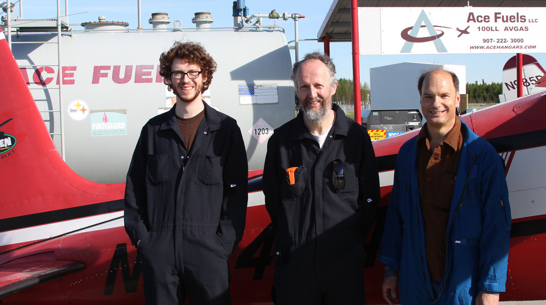
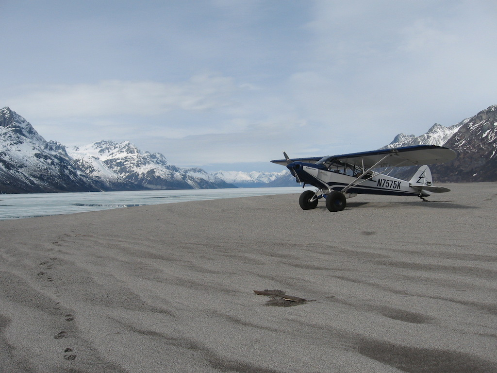
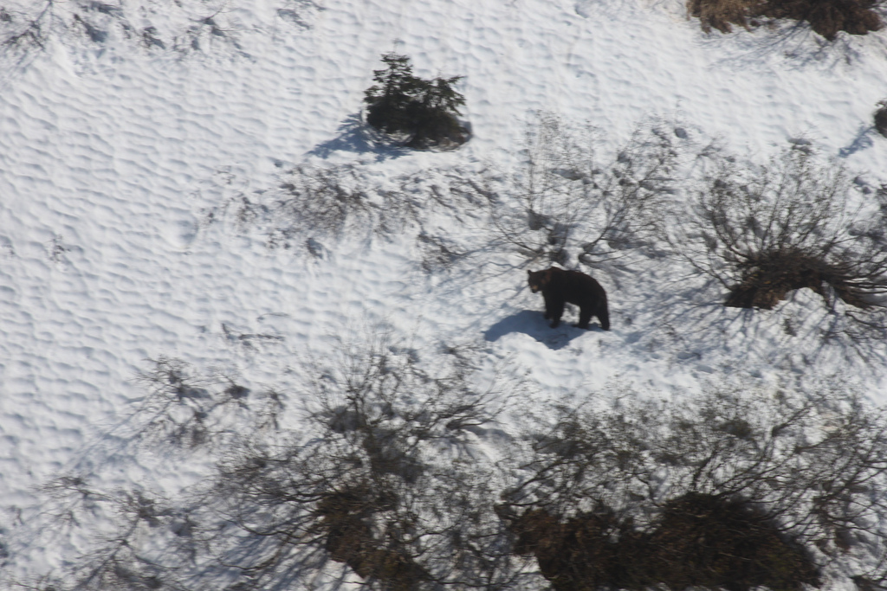
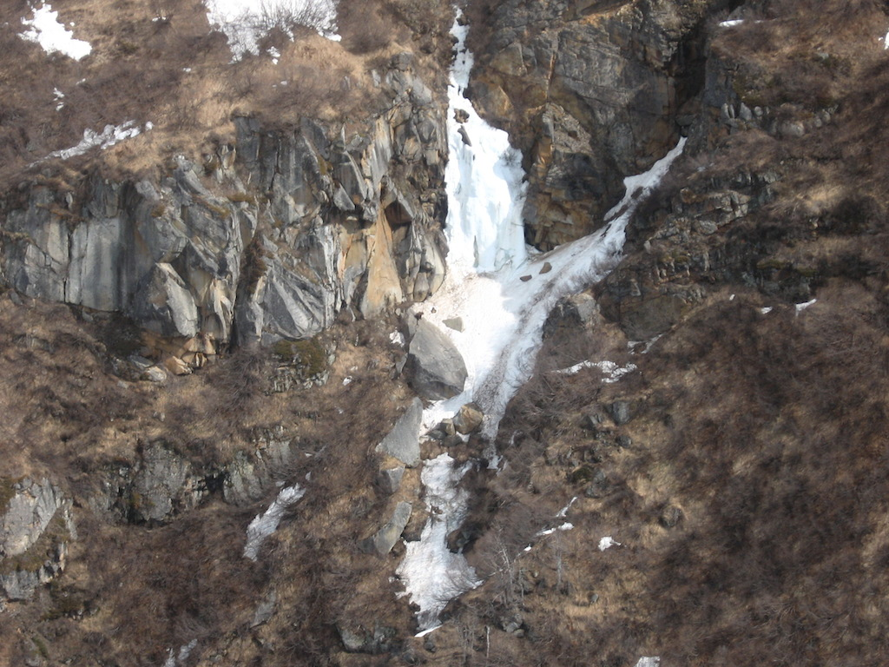
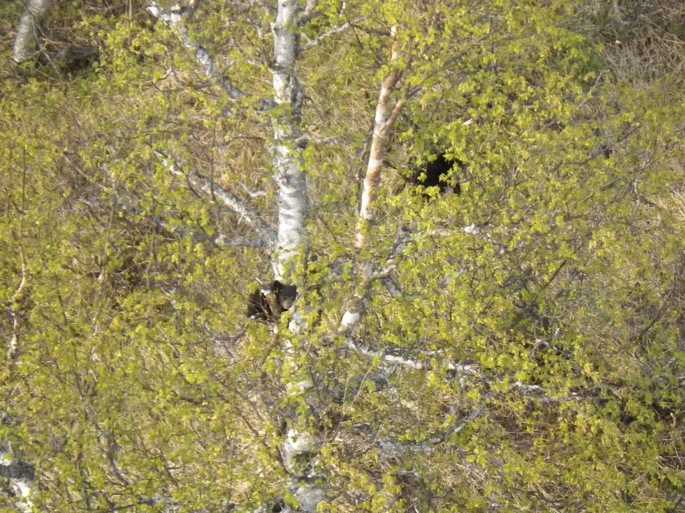
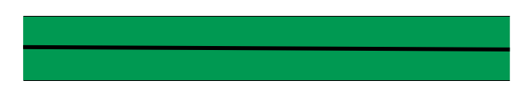
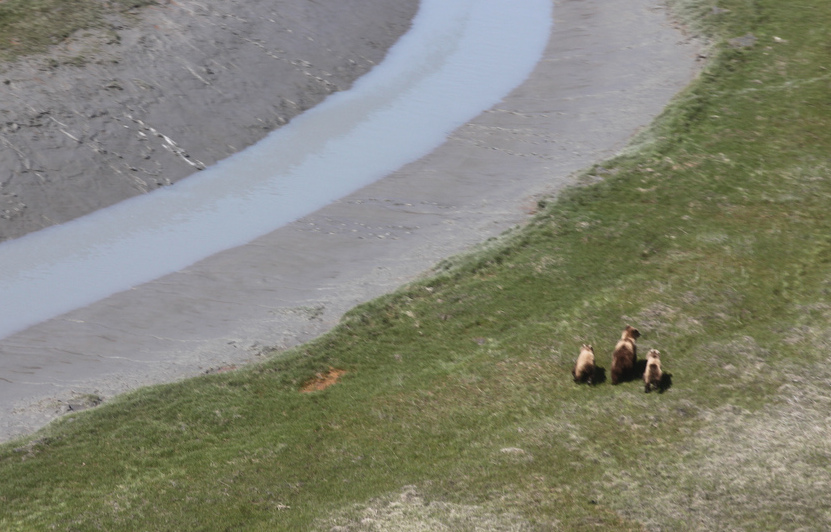
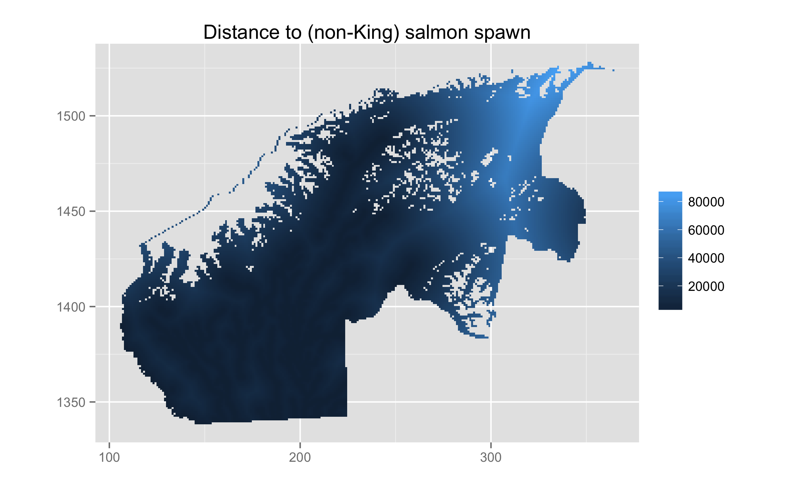
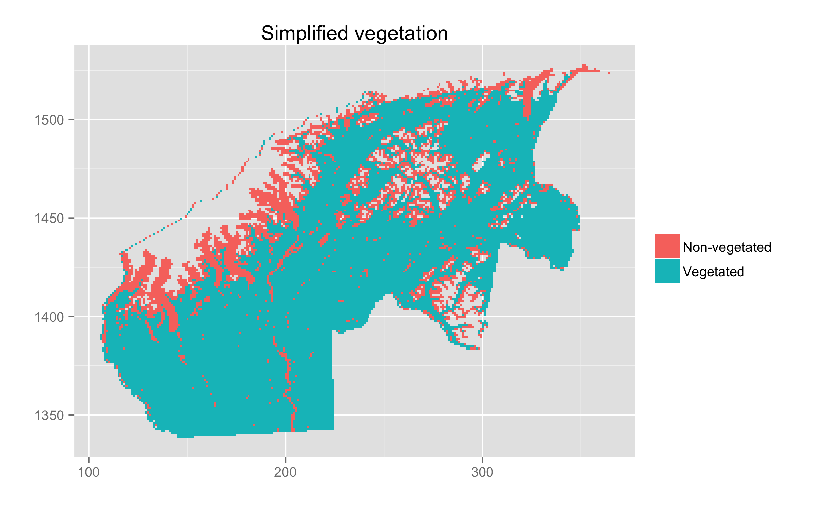

Susitna-Watana dam
- 5th largest dam in the world
- On the Susitna river in South-Central Alaska
- AK Fish & Game contracted to provide black and brown bear numbers
- Earl Becker & DLM to investigate data from 2001-2003

Problems
- Need reliable and spatially explicit estimates
- Use existing data (no $ for new surveys)
- Biological interpretability
- HUGE area
- Understandable to managers


Survey area
- Game Management Unit 13E (plus a bit extra)
- Area of 26,482 km2
- ~1/3 size of Scotland
- ~ size of Vermont/Massachusetts

Aerial line transects
- Double observer surveys using Piper Super Cubs
- 1238, 35km transects, 2001-2003

1238 transects





Survey protocol
- Surveys in Spring, bears are there, but not too much foliage
- Generally search uphill
- Curtain between pilot and observer; light system
- Go off transect and circle to ID

Spatial modelling using DSM
- Segment transects (GIS, 43,838)
- Allocate counts to segments
- Correct for detectibility (and \(g(0)\neq1\))
- Fit a GAM

Spatial modelling using DSM
- Segment transects (GIS, 43,838)
- Allocate counts to segments
- Correct for detectibility (and \(g(0)\neq1\))
- Fit a GAM
Spatial modelling using DSM
- Segment transects (GIS, 43,838)
- Allocate counts to segments
- Correct for detectibility (and \(g(0)\neq1\))
- Fit a GAM
Spatial modelling using DSM
- Segment transects (GIS, 43,838)
- Allocate counts to segments
- Correct for detectibility (and \(g(0)\neq1\))
- Fit a GAM
Distance sampling
- Double observer model a la Borchers et al (2006)
- Independent observers, with point independence
- Partial likelihood:
- Mark-recapture: estimate \(\mathbb{P}[\text{detection at apex}]\)
- Detection function: estimate detection probabilities
- Use ML for both.
- Estimate per-segment abundance using Horvitz-Thompson \[ \hat{N}_j = \sum_{i \in \text{ transect } j}\frac{s_i}{p_i} \]

Detection function
- 2-part normal detection function (Becker & Christ, in prep)
- Avoid heavy left truncation (discard ~30% data)
- Modelling by EB

Black bears
- Saw 373 groups 8.4-711.8m
- Truncate at 22m and 450m, leaving 351 groups
- Group size 1-3 (lone bears, sow w. cubs)
- 1402m elevational cutoff

Detection function
- covariates:
- distance
- indicator for distance greater than the mode (required to make the distribution gamma-like)
- log of search distance
- pilot search type
- Mode at about 129 metres
Search distance: distance from line to the furthest location.
Pilot search type: 2 groups, with one group searching further out.
Spatial modelling
- Using a density surface model (of course!)
- Just a GAM
- Model adjusted counts per segment
\[ \mathbb{E}(\hat{N}_j) = A_j \exp \left( \sum_k f_k(\zeta_{jk}) \right) \]
where \(f_k\) are smooths of covariates \(\zeta_k\), segment area \(A_j\)
and
\[ \hat{N}_j = \sum_{i \in \text{ transect } j}\frac{s_i}{p_i} \]





Other modelling details
- Giant zero-inflation (~350 out of ~44,000 segments)
- Tried both Tweedie and Negative Binomial response
- Negative binomial best fit
- “Primative parallelisation” to find parameter
Randomised quantile residuals
- Goodness of fit testing
- Dunn and Smyth (1996)
- Back transform for exactly Normal residuals
- Less problems with artefacts
- (Thanks to Natalie Kelly at CSIRO for the tip)
gam.check

rqgam.check

Selecting smooth terms
- REML smoothness estimation
- AIC model selection (usual REML constraints)
- (approximate) \(p\)-values
- extra penalty
- biological plausability
Final model
- bivariate smooth of location
- smooth of elevation
- bivariate smooth of slope and aspect